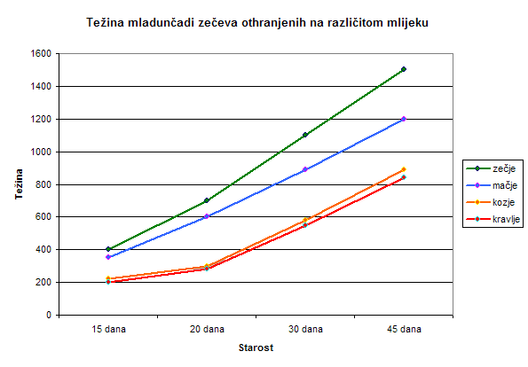

Zašto baš zamjensko mlijeko za mačiće?
Statistika dovoljno govori: čak 38 % beba divljih zečeva NIJE PREŽIVJELO ni prvih mjesec dana, jer se nalaznici nisu pridržavali savjeta sa ovih stranica, ili nisu znali da metoda pravilne prehrane beba divljih zečeva postoji.
Fotografija: mladunče divljeg zeca koje je teško oboljelo, jer su ga nalaznici othranjivali s pogrešnim mlijekom. Ovakvih primjera je nažalost bilo previše. Molimo Vas da se pridržavate naših tekstova o pravilnoj prehrani i spriječite ovakav ishod.
Na neadekvatnoj prehrani zec možda i preživi neko vrijeme, ali je daleko podložniji bolestima, samo-lomu kostiju i drugim komplikacijama. To će ga možda zadesiti kada odraste i bude u divljini, a mi mu više nećemo moći pomoći. Može se dogoditi pred očima vas ili vaše djece, a to nije nimalo lijepo za vidjeti. Neka vam prioritet bude ne bilo kako, nego pravilno othraniti zeca i pripremiti ga za dug i kvalitetan život.
{kind=link}
{kind=link}
Nije svako mlijeko isto!
Kravlje, kozje, ovčje i zamjensko mlijeko za ljudske bebe ne preporučuje se za ishranu divljeg zeca. Najsličnije mlijeko zečjem mlijeku je zamjensko mlijeko za mačiće u prahu, koje možete kupiti u pet shopovima i kod veterinara.
Zečevi u prirodi brzo rastu: od početnih 0,1 kg za oko mjesec i pol dana dosegnu čak 1 kilogram! Za to im je potrebno puno masnoća i proteina iz mlijeka, a takav sastav ima zamjensko mlijeko za mačiće. Podaci su vidljivi u tablici.
Tablica prikazuje okvirnu količinu hranjivih tvari u 100 grama mlijeka različitih životinja:
| vrsta | masnoće | proteini | laktoza |
| kunić/zec | 15 g | 14 g | 1,8 g |
| zamorčić | 3,9 g | 8,1 g | 3 g |
| koza | 3,5 g | 3,1 g | 4,6 g |
| krava | 4 g | 3,5 g | 5 g |
| ovca | 5,3 g | 5,5 g | 4,6 g |
| čovjek | 3,8 g | 1 g | 7 g |
| mačka | 16 g | 20 g | 1 g |
Ljudsko mlijeko ima 4 puta manje masnoća, 10 puta manje proteina i 4 puta više laktoze od zečjeg.
Kravlje mlijeko ima 4 puta manje masnoća, 4 puta manje proteina i 5 puta više laktoze laktoze od zečjeg.
Zamjensko mlijeko za mačiće ima jednako masnoća, 0.4 puta više proteina i gotovo nema laktoze u svom sastavu, kao i zečje.
Mladi zec treba puno proteina i masnoća za svoj iznimno brz razvoj, te što manje laktoze. U prvih mjesec dana života on udeseterostruči svoju težinu!
Razlike
Podaci iz tablice o težini mladučadi i mogućnosti preživljavanja su iz vlastitog iskustva, iskustva nalaznika, te mnogobrojnih inozemnih skloništa za divlje životinje. Iz podataka je vidljivo koliko su zečevi na kravljem/kozjem mlijeku i sličnim lošijim zamjenskim pripravcima slabije razvijeni.
Obratite pozornost na težinu zečeva, ovisno o mlijeku na kojem su othranjeni.
{kind=link}
Napomena: 1 g masti = 9 kcal, 1 g UH = 4 kcal, 1 g prot. = 4 kcal (n/a = podatak nepoznat)
|  |
{kind=link}
Zapažanja:
Zec koji je u prirodi othranjen na mlijeku svoje majke, u mjesec dana sa oko 100 grama naraste na 1000 grama (1 kg). Razlog je, između ostalog, visok udio hranjivih tvari u mlijeku koji je neophodan za tako brz rast.
Na kravljem i kozjem mlijeku težina zeca od mjesec dana iznosi SAMO 600 grama (0,6 kg). Razlog je premalo hranjivih tvari, a zec je tada preslab za svoju dob i lako ugiba. Isto se događa i ako zeko prerano prestane piti zamjensko mlijeko za mačiće.
Ako je zeko dovoljno dugo othranjivan na zamjenskom mlijeku za mačiće, tada ima barem 800 grama sa mjesec dana starosti, što je daleko najbliže rezultatima na originalnom zečjem mlijeku.
Zaključak: od zamjenskih mlijeka najbolje je koristiti mlijeko za mačiće u prahu otopljeno u vodi, s kombinaciojom probiotika i drugih lijekova koje koristi rehabilitator.
Na kravljem mlijeku divlji zec se možda (male su šanse da uopće preživi!) može kvantitativno razviti, no nikako KVALITATIVNO. To znači da se na kravljem mlijeku (kozjem i ovčjem) zec neće pravilno razviti i prije ili kasnije će uginuti ili ostati nepokretan gotovo preko noći.
90-95% mladunčadi ugiba na kravljem mlijeku u prvim danima kada ga počinju dobivati. Od onih 5-10 % koji prežive, polovica završi kao zečići na gornjim slikama. To se može spriječiti! Osim što su fizički zdraviji i jači, na zamjenskom mlijeku za mačiće zečevi dosežu barem 80% težine koju bi imali da su ostali uz svoju majku. Na ostalim (pogrešnim) pripravcima dosežu manje od 60% razvijenosti, što se manifestira uvrtanjem nogica, atrofijom mišića i propadanjem ionako slabog i nerazvijenog mišićnog tkiva.
Napominjemo da se takav slučaj niti jednom nije dogodio kod zečeva othranjenih na zamjenskom mlijeku za mačiće, kojeg preporučujemo. Takve slučajeve redovito dobivamo samo kod kravljeg mlijeka, zamjenskog mlijeka za ljudske bebe i sl.
Sada znate da ne postoji NITI JEDAN argument koji bi opravdao davanje kravljeg, kozjeg, ovčjeg mlijeka ili zamjenskog mlijeka za ljudske bebe. Slike govore više od riječi, a mi smo se ovakvih slučajeva nagledali i previše… Želja nam je da takvih slučajeva u budućnosti bude što manje, jer je grozno vidjeti umiruću životinju kojoj je probava uništena zbog laktoze, ili su joj atrofitrali mišići zato što je bila hranjena preslabim mlijekom. Sve to se može spriječiti: za othranjivanje beba zečeva koristite zamjensko mlijeko za mačiće!
Ako ste bebu do sada hranili kravljim mlijekom, kontaktirajte nas pa ćemo mu odrediti način prehrane koji će pomoći da bude jači i zdraviji kad odraste.
Što ako baš danas ne mogu do zamjenskog mlijeka za mačiće?
Ljudi često nalaze bebe zečeve vikendom, kada pet shopovi i veterinari ne rade. Ili ih nađu u malim mjestima i na otocima, gdje je teže doći do zamjenskog mlijeka.
1. korakNabavite što masnije kravlje ili kozje mlijeko. Imajte na umu da takvo mlijeko nije dovoljno hranjivo i sadrži previše laktoze za divljeg zeca. To je samo privremeno rješenje dok ne nabavite zamjensko mlijeko za mačiće, što najčešće bude za max 2 dana.
2. korakKravljim mlijekom hranite zečića što češće tijekom dana - desetak puta, u jako malim obrocima. Npr. bebu zeca težine 150 grama hranite 10 puta dnevno po 1-2 ml mlijeka, u pravilnim razmacima. U mlijeko OBAVEZNO umiješajte probiotik (Prolife, Ferzym ili Linex). Ako ga nemate u svojoj kućnoj ljekarni, pitajte kod susjeda ili navratite u dežurnu ljekarnu. Također je poželjan Biseptol/ Sulotrim/ Bactrim sirup protiv kokcidija.
3. korakNakon svakog obroka masirajte bebi trbuščić. Masiranje znači maženje trbuščića s minimalnim pritiskom, a možda ćete pod prstima osjetiti bebina crijeva poput zrnaca pijeska.
4. korakČim budete u mogućnosti (prvi radni dan u tjednu) OBAVEZNO otiđite do bilo kojeg pet shopa ili veterinara po zamjensko mlijeko za mačiće u prahu (najbolje je GimCat). Ako ipak ne uspijete naći mlijeko, kontaktirajte nas. Nastavite li hraniti zeku kravljim mlijekom, on može uginuti.
ZaključakOvaj postupak vrijedi isključivo za krizne situacije i samo je PRIVREMENO rješenje, kada beba zeca mora dobiti bilo kakav obrok, pa makar i ovako loš i nepouzdan. Čim nabavite zamjensko mlijeko za mačiće u prahu (što bi trebalo biti u roku od 48 sati), pridržavajte se uputa s naše stranice, ako želite da beba preživi!
Kolika je uspješnost othranjivanja mladih zečeva prema uputama na stranicama udruge?
To je kao da rehabilitatoru divljih životinja postavite pitanje: kolika je uspješnost liječenja i koliko često prežive životinje koje vam dođu ranjene od metka iz puške ili ranjene na prometnicama?
Naravno da za to ne postoji dobar odgovor, jer ovisi o težini ozljeda i stanju u kojem je životinja došla, o stanju u kojem će biti nakon operacije i o nizu drugih parametara, koji ne ovise o rehabilitatoru i njegovoj stručnosti, već o pukoj sreći (ili nesreći) koju je životinja imala. Stoga odgovor na sva ova pitanja može biti samo relativan, ali pokušat ćemo odgovoriti, uz edukaciju o osnovnim pojmovima.
Kolostrum
Tijekom prvih dana laktacije, majke sisavaca (pa tako i divljeg zeca) proizvode mlijeko koje nazivamo kolostrum. To mlijeko sadrži antitijela potrebna bebi da se odupre „lošim“ bakterijama. Također sadrži i mnoge sastojke koji omogućavaju pravilan razvoj imunološkog sustava mladunčadi. Bez kolostruma, bebe bilo kojeg sisavca imaju manje šanse za preživljavanje. Dođe li rehabilitatoru beba stara 1 dan ili svega par dana, on će učiniti sve što je u njegovoj moći da bebu spasi, ali jasno je da sudbina nije u njegovim rukama. Beba je preranim odvajanjem od majke već „ozlijeđena“ iznutra, jer nije dobila dovoljnu količinu nezamjenjivog kolostruma.
Koje zamjensko mlijeko koristiti?
Ako želite da beba divljeg zeca preživi, obavezno koristite zamjensko mlijeko za mačiće, jer je to mlijeko s reduciranom laktozom i pojačano suplementima za razvoj mladunčadi. Nipošto nemojte koristiti kravlje ili kozje mlijeko, niti zamjenska mlijeka za ljudske bebe. Zečevi su netolerantni prema višem postotku laktoze, pa othranjivanje na kravljem/kozjem i sličnom mlijeku koje sadrži puno laktoze kod zečeva dovodi do teškog proljeva i probavnih smetnji. Kada do toga dođe, gotovo je sigurno da će mladunac uginuti.
Kolika je uspješnost othranjivanja zamjenskim mačjim mlijekom, naspram ostalih mlijeka?
| Ako beba zeca dođe stara | Postotak preživljavanja na zamjenskom mlijeku za mačiće: | Razlog postotka: |
| 1 - 2 dana | 20 % | Beba nije dobila ni pola od potrebnog kolostruma. |
| 3 - 5 dana | 20 - 30 % | Zeko je i dalje prekratko bio uz majku. |
| 5 - 10 dana | 30 - 60 % | Znatno veće šanse da preživi, jer je duže bio uz majku. |
| 10 - 14 dana | 60 - 85 % | Jer je dosta dugo bio uz majku. Šansa za preživljavanje je bliža 85% ako je bio uz majku više od 10 dana. |
| >14 dana | 85 - 95 % | Prošao je kritičan period i šansa za preživljavanje je vrlo visoka. |
Najkritičniji su prvih 5 dana života zečića. Ako je od majke odvojen s manje od 5 dana starosti, šanse da preživi su mu daleko manje nego da je bio star 10-tak dana. To je zato što nije dobio dovoljno izvornog majčinog mlijeka.
Vidljivo je i da je između 5. i 10. dana života prisutan velik korak naprijed u šansi za preživljavanje bez majke, na zamjenskom mlijeku za mačiće. Šanse za preživljavanje su već jako velike ako je bio uz majku barem 10 dana.